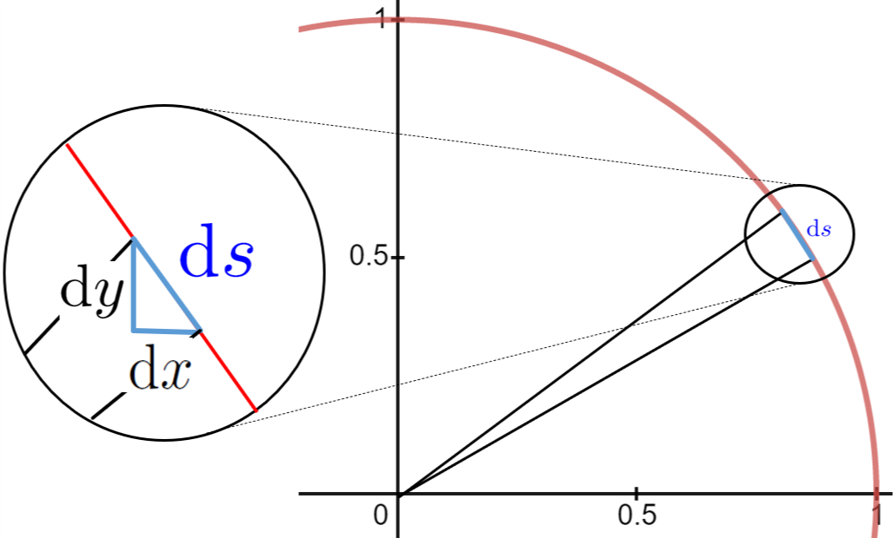

“In the pursuit of truth we must beware of being misled by terms which we do not rightly understand. That is the chief point.†Bertrand Russell 1 
To see what’s wrong with differentials consider the circle and the differential triangle below.

Suppose that \(\dx{s}\) is one of the differentials that makes up the circle. Since \(\dx{s}\) is a non-zero increment it has two distinct endpoints so we can draw the two radii shown. Because the two (distinct) endpoints that lie on the circle are infinitely close together the two lines have the same slope. But all of the radii of a circle pass through the center of the circle so these two in particular must also intersect at the center, and we conclude that we have two parallel lines that intersect.
But the only way that can happen is if they are actually the same line, and if they are the same line then the points on the circle are not really distinct as we’ve drawn them. But if they are not distinct then \(\dx{x}\text{,}\)\(\dx{y}\text{,}\) and \(\dx{s}\) are all actually equal to zero. If \(\dx{x}\) =0 then \(\dfdx{y}{x}\) is meaningless (why?).
This simple argument appears to completely destroy the differential foundation upon which we’ve based everything we’ve done up until now. Try as we might we can’t escape the contradictions inherent in the very notion of infinitely small numbers.
This is very troubling.
Section13.1Calculus and Bishop Berkeley
“In my opinion, a mathematician, in so far as he is a mathematician, need not preoccupy himself with philosophy — an opinion, moreover, which has been expressed by many philosophers.”
Berkeley’s critique was both fierce and correct. Fortunately, it was also (mostly) ignored in its time. Just as we have been so far, mathematicians of the time were too busy using Calculus to concern themselves much with the underlying foundational issues he illuminated so well. But these foundational issues are real and the time has come for us to address the profound logical difficulties inherent in the notion of an infinitely small quantity.
You may well wonder why a Bishop in the Church of England and a philosopher would concern himself with the methods of scientific analysis and investigation. The fact is that Berkeley didn’t really have any quarrel with the use of differentials (or fluxions) in science at all. He was, in fact, a great admirer of Newton and he understood very well that the techniques Newton and Leibniz had introduced actually worked, at least most of the time. He says as much himself in The Analyst
“I have no Controversy about your Conclusions, but only about your Logic and Method . . . It must be remembered that I am not concerned about the truth of your Theorems, but only about the way of coming at them; . . . it may perhaps seem an unaccountable Paradox, that Mathematicians should deduce true Propositions from false Principles, be right in the Conclusion, and yet err in the Premises . . .†(Section XX)
Berkeley might not have bothered publishing his criticisms of Calculus but during the seventeenth and eighteenth centuries a religious movement known as Deism 6 
https://www.britannica.com/topic/Deism
(called “Free-Thinking†in England) was very strong throughout Europe. Many of the scientists of the age were supportive of the Deistic movement because, while Deism itself is not a form of atheism, many of its adherents were atheists. Moreover the Free-Thinkers in England explicitly espoused the questioning and criticism of religious tenets and attitudes. Christianity was attacked by some Deists on the grounds that it was not logical and contained too many mysteries.
As a member of the clergy Berkeley felt compelled to answer these criticisms. Speaking directly to the English scientific community he said,
“Whereas then it is supposed, that you apprehend more distinctly, consider more closely, infer more justly, conclude more accurately than other Men, and that you are therefore less religious because more judicious, I shall claim the privilege of a Free-Thinker; and take the Liberty to inquire into the Object, Principles, and Method of Demonstration admitted by the Mathematicians of the present Age, with the same freedom that you presume to treat the Principles and Mysteries of Religion; to the end, that all Men may see what right you have to lead, or what Encouragement others have to follow you.†(Section II)
He made his purpose clear from the outset by including a biblical verse (Mathew, chapter 7, verse 5) on the title page of The Analyst:
“First cast out the beam out of thine own Eye; and then shalt thou see clearly to cast out the mote out of thy brother’s eye.”
So Berkeley’s purpose in writing The Analyst was to defend his religion rather than to attack mathematics. But he was well acquainted with the adage, “The best defense is a good offense†and he mounted a very good defense.
Some of Berkeley’s specific criticisms will be illuminating.
“. . . they consider the Increments or Decrements themselves, which they call Differences, and which are supposed to be infinitely small . . . . Now to conceive a Quantity infinitely small, that is, infinitely less than any sensible or imaginable Quantity, or than any the least finite Magnitude, is, I confess, above my Capacity. . . . But to conceive a Part of such infinitely small Quantity, that shall be still infinitely less than it, and consequently though multipliy’d infinitely shall never equal the minutest finite Quantity is, I suspect, an infinite Difficulty to any Man whatsoever . . .†(Section V)
Do you see what he’s complaining about? Berkeley is questioning the very existence of the differentials we have been relying on since we began. And he has a point. As we’ve seen our differentials have to satisfy two mutually exclusive properties. They can’t be zero but they must be smaller than “the least finite Magnitude.†On its face this seems to be impossible.
But Berkeley goes further. He says that:
“. . . our modern Analysts are not content to consider only the Differences of finite Quantities: they also consider the the Differences of those Differences, and the Differences of the Differences of the first Differences. And so on{ad infinitum. That is, they consider Quantities infinitely less than the least discernible Quantity; and others infinitely less than those infinitely small ones; and still others infinitely less than the preceding Infinitesimals, and so on without end or limit . . . And (which is most strange) although you should take a Million of Millions of these Infinitesimals, each whereof is supposed infinitely greater than some other real Magnitude, and add them to the least given Quantity, it shall be never the bigger. For this is one of the modest postulata of our modern Mathematicians, and it is a Corner-stone or Ground-work of their Speculations.†(Section VI)
Clearly Berkeley is contemptuous of the reasoning we’ve used to justify our differentiation rules. And, again, he has a point. We have pushed aside issues like this until now because we knew we were showing you the correct techniques, even if our justifications would not bear close examination. In the beginning it was more important that you learn to use Calculus than that you understand all of the logical subtleties that have been used to justify it rigorously.
But wait a second. We know Calculus works. We’ve been successfully solving abstruse and difficult problems with it for some time. Throughout the first part of this text we’ve seen ample, even overwhelming, evidence of this fact. Isn’t that sufficient? Can’t we conclude from the fact that it does seem to work that the notion of the differential is tenable after all?
Sadly, no. Berkeley thought of that too:
“But this inverted way of demonstrating your Principles by your Conclusions . . . is contrary to the Rules of Logic. The truth of a Conclusion will not prove either the Form or the Matter . . . to be true . . . I say that in every other Science Men prove their Conclusions by their Principles, and not their Principles by their Conclusions.†(Section XX)
In order to have confidence in our knowledge, we must begin with simple, clear ideas and build on them logically. Nothing else will do.
However, the path to simple, clear ideas is neither simple nor clear. As we’ve mentioned before, it took about two hundred years for the mathematical community to find and fully understand how to make Calculus rigorous. We introduced the essential idea, the limit, intuitively in Section 12.1.
It would be possible to introduce the limit concept formally and then proceed to develop all of Calculus from it. Logically, there is nothing wrong with this approach, and indeed, this is exactly how most Calculus books present the topic. But the limit concept is very subtle. Unless you understand exactly what issues it is meant to address it is very difficult to understand why it takes the form that it does.
So, we will continue to build on our intuitive approach. However, our focus has changed. In Part I we worked intuitively to build confidence in the tools we were building. Here in Part II, our intention is to highlight how and where our intuition falls short, so that when we finally define the limit concept rigorously in Definition 17.22 it will be clear why it must have the form that it does. What this means is that while our intention is to finally provide the rigor we’ve been lacking we will not actually achieve that until the end of Chapter 17
Section13.2Secants and Tangents
Calculus required continuity, and continuity was supposed to require the infinitely little; but nobody could discover what the infinitely little might be.
In Part I we defined the derivative of \(y=y(x)\) to be the differential ratio \(\dfdx{y}{x}\text{,}\) but Berkeley shows in The Analyst that there are considerable difficulties with this approach. How else might we define the derivative? This is our next puzzle.
If we want to construct the line tangent at a particular point, \((x_0, y(x_0))\) on a given curve we immediately have this problem: We only have one point, but there are (infinitely) many lines through that point. A few of them are shown at the right. How could we possibly pick the tangent line out of this mess?
The only distinguishing feature that the tangent line has is that it is in fact tangent to our curve. That is not much to go on. But it is not nothing either.
To form a line we desperately need another point. But where to find one? The only other points we have to work with are points on the curve itself.
Choose a new point, say \((x_1, y(x_1)),\) on our curve but a little to the right of \((x_0,y(x_0))\) and draw the line between \((x_0,y(x_0))\) and \((x_1,y(x_1))\) as shown in the sketch at the left. Recall from Chapter 6 that the trigonometric secant function is so called because it is the length of a line segment which cuts the circle. The brown line in this sketch cuts the curve so it is called a secant line.
Similarly, if we choose a point a little to the left of \((x_0,y(x_0))\) and draw another secant line (shown in purple) it should be clear that the tangent line will be between the two secant lines in the sketch at the right.
We have eliminated a lot of potential tangent lines, but we haven’t eliminated all of them. Is there a way we could refine our search to reduce the set of possible tangent lines even further?
Sure. Choose \(x_3\) between \(x_0\) and \(x_1\) and draw the (blue) secant line from \(x_0\) to \(x_3,\) and then choose \(x_4\) between \(x_0\) and \(x_2\) and draw the (green) secant line through them to get the sketch at the left. It is clear that we have eliminated more potential tangent lines, and that by continuing to choose points even closer to \(x_0\) we can eliminate even more of them.
This approach seems to have some potential but there are at least two difficulties:
So far we’ve relied heavily on diagrams to motivate our approach, and we know that diagrams can be misleading. However this is not as serious as it seems to be because we are only using the diagrams to motivate a new definition for the derivative. Once that definition is in place we can disregard the diagrams and work directly with the definition regardless of the shape of the graph.
You should generate a few graphs of your own, different from ours and from each other, to confirm that our arguments work for them as well.
We’ve been drawing the tangent lines but we need to keep in mind that the line tangent to the graph of our function at a point is not the derivative of the function. The derivative is the slope of the tangent line. And slope is a number. The pictures we’ve drawn so far are very suggestive but they don’t give us numbers.
For the time being, we will handle the first difficulty by ignoring it. That is, we will continue to use diagrams to motivate our ideas, but when we are done we will have circle back and ask ourselves if our reliance on those diagrams has caused us to miss any special cases which need to be addressed.
To handle the second difficulty consider the sketch at the right. It is clear that if the tangent line, \(T\text{,}\) is caught between lines secant lines \(S_1\) and \(S_2\text{,}\) then the slope of \(T\) is necessarily caught between the slope of \(S_1\) and the slope of \(S_2.\) Thus we have
\begin{equation*}
\text{slope of } S_1=\frac{y(x_1)-y(x_0)}{x_1-x_0}\gt \text{slope of }T\gt
\frac{y(x_2)-y(x_0)}{x_2-x_0}=\text{slope of } S_2.
\end{equation*}
A specific example will be helpful.
Example13.2.
Suppose \(y=x^2\text{.}\) We would like to compute the derivative (slope of the line tangent to the graph) of \(y\) at the point \(x=2\) by the the procedure indicated above.
Before we start, observe that from our work with differentials we know what we are expecting to get. It is
We say that \(y^\prime(2)\) is bounded, and that the numbers \(4.01\) and \(3.99\) are the bounds.
Drill13.3.
Compute bounds on the derivatives of each function given at \(x=2\) by using the values of \(x_1\) and \(x_2\) given below.
\(x_1=2.001,\)\(x_2=1.999\)
\(x_1=2.0001,\)\(x_2=1.9999\)
\(x_1=2.00001,\)\(x_2=1.99999\)
\(x_{1}=2.000001,\)\(x_{2}=1.999999\)
(a)
\(y=x^2\text{,}\)
(b)
\(y=x^3\text{,}\)
(c)
\(y=-\frac{1}{x}\text{,}\) and
(d)
\(y=x^{1/2}\)
The results in Drill 13.3 are looking very promising indeed. Since they are looking so promising we’ll take a few minutes to simplify our notation a bit.
It is tedious to have all of these subscripted \(x\) variables (\(x_0, x_1, x_2, \cdots\)) so we will define an equivalent, but more useful, notation. The basic idea here is that we move to a new point a little bit away from \(x_0\) and form the quotient that gives the slope of the secant line at that point. To construct the first secant line we took \(x_1\) to be a number a little to the right of \(x_0\text{.}\) However, if we take \(h\) to be a positive number near zero then \(x_0+h\) expresses the same idea. Similarly, to construct a secant line a little to the left of \(x_0\) we take \(h\) to be a negative number near zero so that \(x_0+h\) expresses the same idea.
We can capture both situations notationally by agreeing that \(h\) is a number (either positive or negative) which is close to zero. Thus when \(h\) is positive the point \(x_0+h\) is to the right, and when \(h\) is negative the point \(x_0+h\) is to the left of \(x_0\) as shown in the diagram at the right.
When we express the idea this way we no longer need to generate all of the independent variables, \(x_1, x_2, x_3, \ldots\text{.}\) We can accomplish the same thing by taking \(x_h=x_0+h,\) where \(h\) is some arbitrary real number, which is close to zero. Each value of \(h\) gives us a different secant line through the point \((x_0,y(x_0)),\) and its slope will be
By the Principle of Local Linearity we see that when \(h\) is very small the quotient \(\frac{y(x_0+h)-y(x_0)}{h}\) will be very close to the the slope of the tangent line.
There is also a small technical matter we need to think about: Do we really need to consider secant lines on either side of \(x_0\) (for both positive and negative values of \(h\))? Would it not be sufficient to consider just the secant lines on the right formed from the sequence \(x_1=2.1, x_1=2.01, x_1=2.001,\ \ldots?\) It seems pretty clear that the slopes we get, \(4.1, 4.01, 4.001, \ldots\) are getting closer to \(4\text{.}\) Isn’t that enough?
No, it is not. But not because there is any inherent logical flaw in doing so. This has more to do with the properties we want the derivative to have than any purely logical consideration, so we’ll hold off further discussion until Section 15.3.
Returning to the example \(y=x^2\) at \(x=2\text{,}\) we let \(h\) be any number except zero and find of the secant line through \((2,4)\) and \((2+h,(2+h)^2)\text{.}\) We can’t let \(h\) be zero because if it is zero then \((2,4)\) and \((2+h,(2+h)^2)\) are the same point and we can’t construct the secant line. We must have \(h\neq0\) just to get started. In that case we have
This is interesting. Do you recognize this computation? It should be familiar to you. This is precisely the same computation you did when you used Fermat’s adaptation of the Method of Adequality to find tangent lines in Problem 3.18. The only difference, really, is that at this point Fermat would simply set \(h=0\) and move on. We can’t do that because we need two distinct points to specify a (secant) line. If \(h=0\) we only have one. This is frustrating because we can see that setting \(h=0\) will give us \(y^\prime(2)=4\) which we know to be the correct value.
Berkeley pointed out the problem of setting \(h=0\) in The Analyst (his Increments are what we’ve called \(h\)):
. . . this reasoning is not fair or conclusive. For when it is said, let the Increments vanish, i.e. let the Increments be nothing, or let there be no Increments, the former Supposition that the Increments were something, or that there were Increments is destroyed, and yet as a Consequence of that Supposition, i.e. an Expression got by virtue thereof, is retained. Which . . . is a false way of reasoning. Certainly when we suppose the Increments to vanish, we must suppose their Proportions, their Expressions, and every thing else derived from the Supposition of their Existence to vanish with them.
Requiring \(h\) to be non-zero at the beginning of our argument, and zero at the end is tantamount to requiring \(h\) to be zero and not zero simultaneously which is not possible. So \(h\) can’t be zero. But it can be very close to zero. Moreover as it gets closer to zero (\(h\rightarrow0\)) it is clear that \(4+h\rightarrow4\text{.}\) This should also feel very familiar to you. Do you see that we’re talking about a limit? From equation (13.2) we see that as \(h\rightarrow0\text{,}\)
Moreover, by the Principle of Local Linearity as \(h\rightarrow0\) the secant and tangent lines become indistinguishable. Thus it appears that the limit
will be the value of the derivative at \(x=2\text{.}\)
Our discussion in Example 13.2 suggests that we can use the limit concept to finally resolve the logical difficulties inherent in a naive use of the differential as a foundation for Calculus, and that is exactly our present goal.
In this second part of this text we will finally build a viable theory to support Calculus which even Bishop Berkeley would have to accept. We begin with the following definition. This is the modern definition of the derivative.
Definition13.4.The Derivative.
Suppose \(f\) is a function, and that \(x\) is a real number. If \(\limit{h}{0}{\frac{f(x+h{})-f(x)}{h}}\) exists then we say that \(f\) is differentiable at \(x\) and that the derivative of \(f\) at \(x\) is given by:
if this limit exists. If the limit does not exist then the derivative also does not exist at \(x\text{.}\)
Definition 13.4 defines the derivative locally, “at \(x\text{.}\)†This may seem to be a mere formality but it is not. When we write \(f(x)\) it is easy to fall into the habit of thinking of \(x\) as representing all of the points in the domain of \(f\text{.}\) But that is fundamentally wrong. The variable \(x\) always represents a single point in the domain of \(f\text{.}\) Always. No exceptions. When its value is unknown we call it \(x\) (or \(y\text{,}\) or \(z\text{,}\) or Fred, Ethel, Ricky, or Lucy. These are all just names we give to a unknown specific quantity) because this is simpler than saying “whatever point we’re interested in.†This is why the symbol \(f(x)\) is pronounced “\(f\) of \(x\text{,}\)†or “\(f\) at \(x\text{.}\)”
In Example 13.2 we evaluated the derivative of \(f(x)=x^2\) at the single point \(x=2\text{.}\) It appears that if we want to evaluate the derivative of \(f(x)=x^2\) at \(x=3\) and \(x=4\) we need to compute \(\tlimit{h}{0}{\frac{f(3+h)-f(3)}{h}}\text{,}\) and \(\tlimit{h}{0}{\frac{f(4+h)-f(4)}{h}}\text{.}\)
But it is tedious to compute the derivative of a function one specific point at a time. If we leave \(x\) unspecified and compute \(f^\prime(x)=\limit{h}{0}{\frac{f(x+h)-f(x)}{h}} \) we obtain the value of the derivative of \(f\) at the single, but unspecified point \(x\text{.}\) We can then find the derivative of \(f\) at any point by replacing \(x\) with whatever point we are interested in.
Drill13.5.
Use the techniques we saw in Chapter 12 to compute \(f^\prime(x)\) by evaluating a limit. Check your work by differentiating using differentials.
Do not use L’Hôpital’s Rule. L’Hôpital’s Rule as that would be circular reasoning.
(a)
\(f(x)=x^2\)
(b)
\(f(x)=2x^2-x\)
(c)
\(f(x)=x^6-7x^4\)
(d)
\(f(x)=\pi\)
(e)
\(f(x)=\frac{1}{x^3}\)
(f)
\(f(x)=-\frac{1}{x}\)
(g)
\(f(x)=x^{1/2}\)
(h)
\(f(x)=x^{1/3}\)
When a function is differentiable at all of the points in its domain it is said to be differentiable on its domain or just differentiable.
Problem13.6.
Which of the functions in Drill 13.5 are differentiable and which are not? Identify all points of non-differentiability.
If you look closely at Definition 13.4 you can see Leibniz’ differentials lurking in the background. If we let \(\Delta{}y=f(x+h{})-f(x)\) and \(\Delta x = h\) then for values of \(h\) very close to zero we have.
The approximation gets better as \(\Delta x\rightarrow0\) (equivalently, as \(h\rightarrow0\)) so you can see that Definition 13.4 avoids the infinitely small by replacing differentials with \(\Delta x\) (equivalently \(h\)) which is a small, but finite, number which is only considered in the limit as \(\Delta x\rightarrow0\text{.}\) In particular, \(\Delta x\) is not an infinitesimal. But it is allowed to become as close to zero as needed while remaining finite in size. Needless to say, limits are much harder to work with than differentials. Their saving grace is if they can be made logically unassailable with a proper definition. Bishop Berkeley would approve.
For the rest of this text we pursue two over-arching goals. The first is to rigorously recapture from Definition 13.4 all of the differentiation rules we are already familiar with. We will address that in the first section of the next chapter. Keep in mind that we are not developing the differentiation rules. We already know them, and by now you should be quite skillful at their use. Our goal now is to show rigorously that by using Definition 13.4 we can recapture all of the properties that we found so useful before.
To do this we will need several properties of limits which we will state — without proof — in the next section. Then we will prove that our differentiation rules and the First Derivative Test are valid using Definition 13.4. However all of this will be done under the assumption that the limit properties in the next section are actually true.
Our second goal is to prove, rigorously that the limit properties in the next section are actually true. We will do this in Section 17.4.